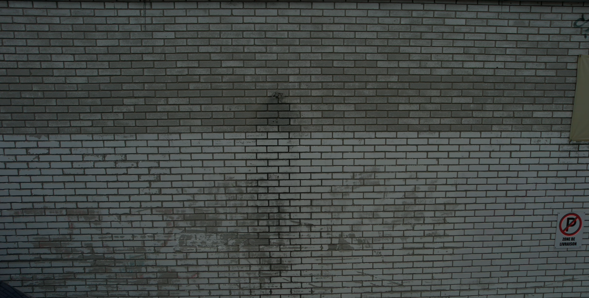

Inspection visuelle
Mandats réels
Consultez des exemples de mandats réalisés par Vision Altitude en inspection visuelle aérienne et en suivi de chantier. Chaque étude de cas présente le contexte, l’objectif de la captation et l’utilisation possible des images obtenues.
Projets documentés
Les informations sont présentées de façon prudente, sans inventer de client, de lieu ou de résultat.
Vision Altitude peut préparer une captation adaptée à vos objectifs.